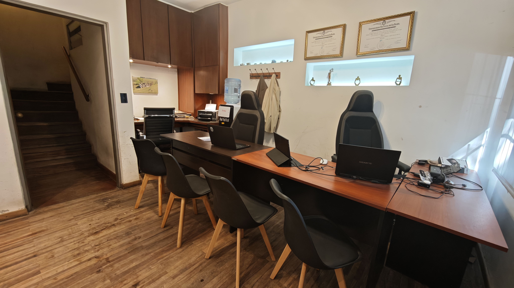

Un estudio jurídico fundado sobre la convicción de que cada persona merece asesoramiento legal de excelencia, con cercanía y compromiso genuino.

Otamendi & Jofré nació de la convicción de que el derecho debe estar al servicio de las personas. Fundado por Micaela Jofré y Sebastián Otamendi, dos profesionales con especialidades complementarias, el estudio ofrece una cobertura jurídica integral que abarca tanto las necesidades individuales como las empresariales.
Nos diferencia un enfoque genuinamente interdisciplinario: donde el derecho de familia dialoga con el laboral, y el asesoramiento societario se integra con la gestión de marcas y contratos. Esta complementariedad permite dar respuestas más completas y estratégicas a cada situación.
Creemos que el acceso a la justicia es un derecho de todos, y que un buen abogado no solo defiende — acompaña, explica y trabaja junto al cliente en cada paso del camino.
Analizamos cada situación desde todas las aristas jurídicas relevantes, sin dejar cabos sueltos.
Atención directa y continua. No delegamos el vínculo con el cliente a terceros.
Formación continua y participación activa en el desarrollo del derecho, dentro y fuera del estudio.
Actuamos con rigor ético, responsabilidad y transparencia en cada caso que asumimos.
Creemos en el acceso igualitario a la justicia y lo plasmamos en nuestra práctica cotidiana.
Construimos relaciones de confianza duraderas, tratando a cada cliente como un caso único.
Comprendemos en profundidad la situación de cada cliente antes de llegar a cualquier conclusión.
Evaluamos todos los aspectos legales, identificando oportunidades y anticipando posibles dificultades.
Diseñamos un plan de acción específico con objetivos claros y plazos realistas para cada caso.
Mantenemos al cliente informado en cada etapa del proceso, respondiendo dudas sin tecnicismos.
En Otamendi & Jofré entendemos que la práctica del derecho no se limita al trabajo en el estudio. Participamos activamente en la comunidad jurídica y académica, y reconocemos nuestra responsabilidad social como profesionales del derecho.
Ambos socios participan en actividades académicas de forma sostenida, desde la docencia universitaria hasta congresos nacionales de derecho especializados.
Integramos una red de profesionales de distintas disciplinas que nos permite ofrecer soluciones completas ante situaciones que exceden el ámbito puramente jurídico.
Ejercemos el derecho con ética y vocación de servicio, acompañando situaciones de vulnerabilidad con la misma dedicación que cualquier otro caso.
Agendá una consulta con nuestro equipo. Te acompañamos en cada paso del proceso.
Contactanos Ahora